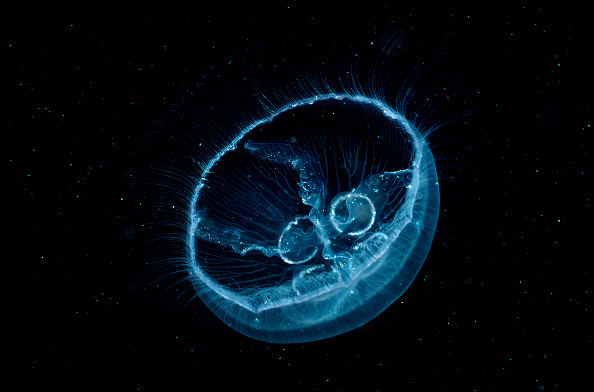
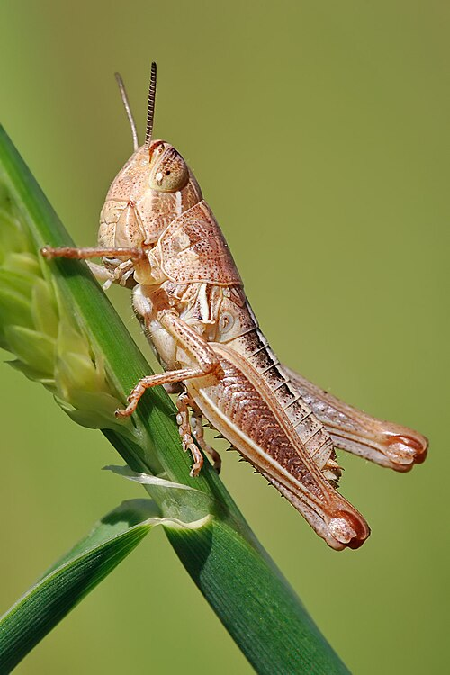

Hewan Invertebrata

Ubur-ubur (Aurelia aurita)
Hewan laut transparan dengan tentakel menyengat dan tidak bertulang belakang.

Belalang (Caelifera)
Invertebrata darat yang mampu melompat tinggi dan pemakan tumbuhan.

Kerang (Anadara granosa)
Hewan bercangkang dua yang hidup di perairan dan bisa dikonsumsi.

Cacing Tanah (Lumbricus terrestris)
Hewan lunak yang hidup di tanah dan membantu menyuburkan tanah.

Bintang Laut (Asteroidea)
Hidup di laut dangkal, mampu meregenerasi lengan yang hilang.

Kelabang (Chilopoda)
Invertebrata berbisa dengan banyak kaki, hidup di tempat lembap.

Ubur-ubur Kotak (Chironex fleckeri)
Salah satu hewan laut paling beracun, hidup di perairan tropis.

Karang (Anthozoa)
Koloni hewan kecil yang membentuk terumbu laut, penting bagi ekosistem laut.